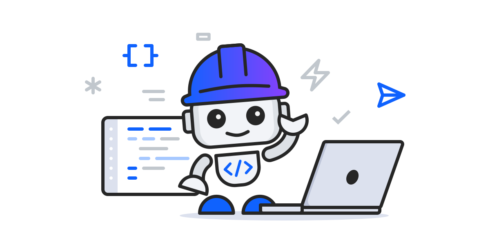

[Important] Submit your Bobathon result
Export your Bobathon conversation as a JSON file.
Find an automation idea
Start with a frustration you have experienced firsthand.
MCP connection guides
Connect Bob to the tools and information you use at work.
Connect a basic MCP to Bob
Use this when you want to connect your first tool to Bob through MCP.
Notion MCP
Use this when you want Bob to find and use work documents or information in Notion.
Find current technical documentation - Context7 MCP
Use this when you want Bob to find and consult the latest official documentation for your libraries or frameworks.
Search the web - Exa MCP
Use this when you want Bob to search current web and technical sources and inspect the original pages.
Connect email and calendars - Nylas MCP
Use this when you want Bob to access email, calendars, and contacts as part of your workflow.
Automate a browser - Playwright MCP
Use this when you want Bob to open pages, click, type, and check how a service behaves.
Review repositories and issues - GitHub MCP
Use this when you want Bob to safely read GitHub repository, issue, and pull request information.
Create an agent email inbox - AgentMail MCP
Use this when you want Bob to operate a dedicated inbox and automate message review and sending.